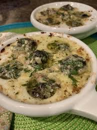

Escargot

Escargot From France
You'll be shocked by how simple this escargot recipe is! Impress your friends with one of France's classic dishes – escargot (snails) with a parsley garlic butter!
This escargot recipe is unbelievably easy. If you're lucky enough to find the escargot shells to stuff them in, that makes for a beautiful presentation, but no worries if you want to make it without shells!
Ingredients
- Butter
- Parsley
- White wine
- Escargot
- Garlic
- Shallot
Steps
- Remove butter from the fridge and allow it to soften to room temperature.
- Open the can of escargot and drain out the liquid. I usually have to use my hands to mix and work with the dough. At this point you should be able to form balls that stick together. You may need to add a bit more nut butter and/or sweetener to help them stick together.
-
Meanwhile, peel and finely mince about 10 cloves of garlic. When you think you've minced it enough, mince it even more. This should take a while.
- Finely dice/mince a small shallot as small as you can, but don't macerate the shallot.
- Remove parsley leaves from the stems. Pinch them into a tight stack and slice, then mince until parsley is in "flake" or "dust" texture.
- In a mixing bowl, add softened butter, garlic, shallot, parsley, white wine, salt, and pepper. Mix with rubber spatula.
- hether using shells or an escargot plate, add one scoop to the vessel.
- Then, top with a drained escargot, then add another scoop of butter on top. You may need to use your fingers to press it down, as the escargot should be covered in butter.
- If you are using just a baking dish and no shells or escargot dish, you'll want to use roughly 1 cup of garlic butter for 24 snails. (2 teaspoons times 24 = 1 cup).
- Bake in a 400º F oven for 10-12 minutes.